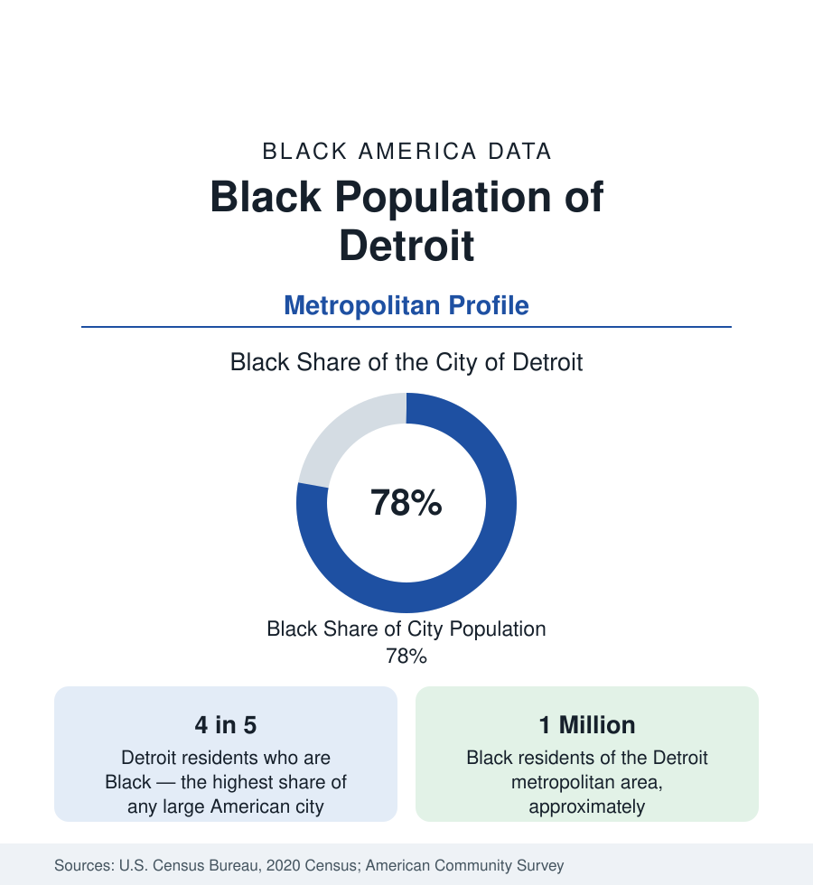

Black Cities
Black Detroit: America's Blackest Big City
Detroit is the most heavily Black large city in the United States — about four in five residents — and its metro holds nearly a million Black residents. The census profile.

Detroit is the Blackest big city in America. About four in five of its roughly 640,000 residents are Black — a share near 78 percent, the highest of any large city in the nation — and the metropolitan area around it holds close to a million Black residents. Detroit's Black population was built by the automobile industry's demand for labor, governed the city politically for half a century, and endured the most severe urban fiscal collapse in modern American history. Its recent censuses record the first population growth in seventy years. This article profiles Black Detroit in the data.
The Arsenal of Democracy's Workforce
Black Detroit was made by the auto plants. The Great Migration's Michigan stream drew Southern Black workers to Ford, General Motors, and Chrysler and their supplier webs, where unionized industrial wages built the most prosperous Black working class of the twentieth century — the economic foundation under the city's Black homeownership, its churches, and the Motown record empire that made Black Detroit a global cultural capital. The Black Bottom and Paradise Valley districts, the city's first Black geographies, were cleared in the urban-renewal era, dispersing their residents across the city's northwest and east sides — the neighborhoods that, tract by tract in the census data, remain the city's Black residential core today.
Majority and Power
Detroit crossed to a Black majority in the 1970s and elected its first Black mayor in 1973, beginning an unbroken era of Black political leadership through the city's long fiscal decline. The population data record the decline's scale: from a peak of about 1.85 million residents in 1950, the city fell to roughly 640,000, as automobile employment automated and suburbanized and as White and then Black middle-class households followed the jobs outward. The Black population itself fell from its peak of well over 800,000 to just under 500,000 in the city — while its share rose to the present four-fifths, because the departures of other groups were faster. Municipal bankruptcy in the following decade, the largest in American history, forms the fiscal backdrop of the current data.
The Metro: Southfield and the Ring
The metropolitan story differs from the city's, as it does throughout this section. Metro Detroit's Black population of nearly one million includes the large suburban communities of the inner ring: Southfield, a majority-Black suburb with a professional profile and median incomes above the city's by wide margins; Oak Park, Harper Woods, Inkster, and Pontiac among others. The suburbanization of Black Detroit accelerated after the bankruptcy era, and the survey data show the metro's Black median income and attainment pulled upward by the ring even as city tracts record some of the deepest poverty measured in this reference. Wayne County's Downriver and western suburbs add further growth.
Composition and Conditions
Black Detroit's indicators present the section's widest internal range in a single jurisdiction. The city contains both neighborhoods of severe disinvestment — where vacancy, tax foreclosure, and health indicators record the collapse's continuing toll — and districts of stable, high-ownership Black homeownership in the northwest, among them some of the largest Black middle-class residential areas in the Midwest. Educational attainment in the city runs below national Black averages; the metro figure, including its suburbs and its universities, runs closer. The foreign-born share is small — this is a population of Southern descent, a few generations deep, in a city their grandparents built.
The Turn in the Data
The most recent censuses and estimates record a genuine inflection: Detroit's total population grew in the 2020 count's aftermath for the first time since the 1950s, housing values in Black neighborhoods have risen from collapse levels, and the city's Black population has stabilized after decades of decline. Whether the turn compounds into recovery — and who shares in it, the question the tract data will answer — is the open question of the profile. What the present figures establish is the standing fact: the largest, most completely Black big-city population in the United States, in the city where Black industrial America was made.
The institutional record matches the demographic one: the city holds the Charles H. Wright Museum of African American History, among the largest institutions of its kind in the nation, and the Motown Museum at the record label's original headquarters — anchors of a Black cultural patrimony that the population figures, at four in five residents, make the civic mainstream rather than a minority tradition.
More in Black Cities
Black Atlanta: Population, Distribution, and Growth of a Black Metropolis
Metro Atlanta holds more than two million Black residents — roughly one in three, second only to New York. The suburban distribution, migration history, and composition of Black Atlanta in the census data.
Black New York: The Largest Black Population in America
The New York metropolitan area holds about 3.4 million Black residents — more than any metro in the nation — and the city itself about two million. The census profile.
Black Washington: The District and the Metro
The Washington metro holds about 1.6 million Black residents, and the District itself — long a majority-Black city — now records a Black share near 41 percent. The census profile.
Source: U.S. Census Bureau, 2020 Census; American Community Survey; Population Estimates Program.